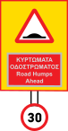

Loading...

Warning sign with supplementary plate. Road humps ahead in 30m
⚠ Warning Signs
📖 Description
This sign warns that a speed bump is located 30 meters ahead. Drivers should slow down to around 30 km/h to pass safely without damaging the vehicle or losing control.